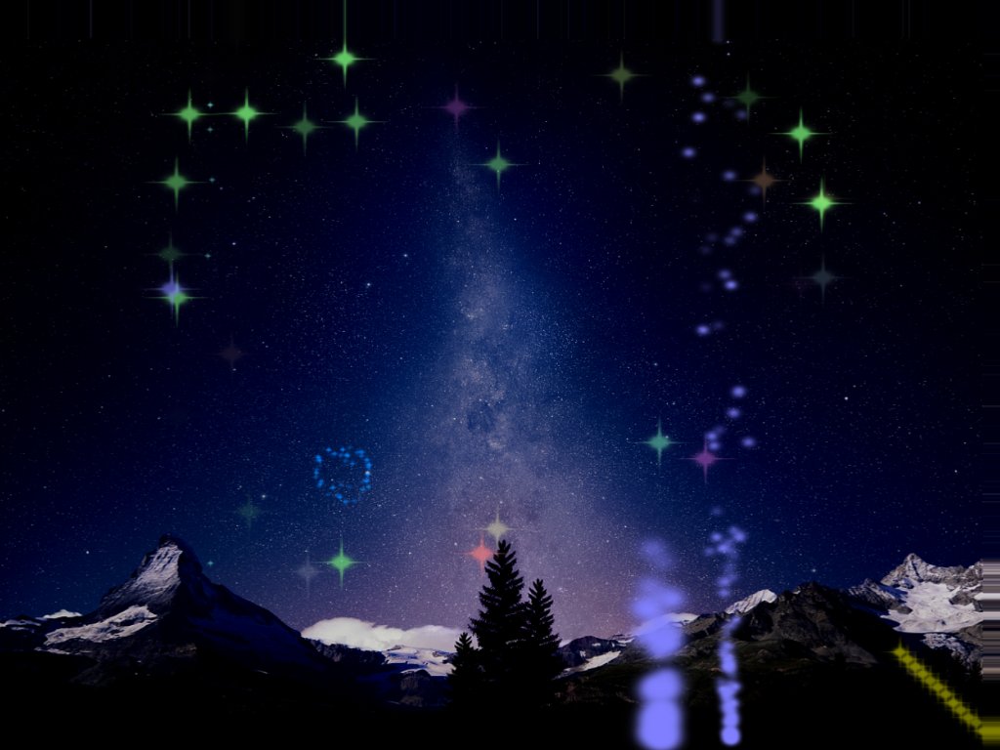

Fireworks Demo

Particle systems
XML files allow specification for any number of emitters, and specification of start times, duration and colour information, I used TinyXML to aid with parsing. Currently only two types of emitter are supported (fountains and rockets) but code should allow easy addition of more types and/or parameters for the XML format.
The systems are rendered in the centre of the world and a skybox was used to render the horizons. The 'A', 'S', 'W' and 'D' keys can be used (along with the mouse or cursor keys) to move the camera. Emitters are rendered using billboarded quads.
The code design includes a manager object and a base emitter type from which firework emitter types are derived. It is envisaged that this application will be used as a test container to develop other types of particle based effects such as smoke effects using vortex particles.
<< BackDownload demo here
Download source code here